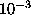

The algorithm in the previous section is implemented for the ECCSVM code using a fast multipole solver for the velocity field. To implement the fast solver, elements are grouped together on an hierarchy of cells for the velocity computation. This grouping is also used for the creation of clusters for the merging algorithm. Since the computational elements are localized, merging events in one cell do not induce errors in other cells. When searching a cluster, a certain error is budgeted for all merging events so this total error budget is divided evenly amongst all possible merging events. The following simple scheme yielded consistently strong results. If one were considering merging n elements in a cell with m elements, then the total acceptable error is is were is the maximum allowable uniform error.
Figure 5.1: Contour plot of advecting vortex dipole at t=4.0. The
algorithm attempts to merge redundant elements at time intervals of 0.2 so
that this configuration has experienced the algorithm 20 times. The maximum
acceptable error for each pass is 0.08 though the actual error never
exceeds a
tenth of this value. On the left, vorticity contours (solid for positive and
dashed for negative) are evenly
spaced at intervals of 0.25. On the right, the difference between the
vorticity field before and after merging is displayed.
The
error contours (solid) are evenly spaced at intervals of

.
Figure: The anatomy of a single merging event. For the same snapshot at in
Fig. (5.1), the merged elements are displayed. Contour lines and
computational elements are superposed on the right. Computational elements
are shown by X's where the length of the lines are proportional to the
semi-major and semi-minor axes. Negative elements are
displayed slightly darker than positive elements. The black elements are
the elements that are merged. The area in the box on the left plot is
expanded on the right. Notice that nearby elements tend to align with one
another because the Reynolds number is high.
The sample problem is that of a high Reynolds number dipole with viscosity 0.01 and initial conditions
The details and numerical parameters of the simulation are discussed in more detail in [14]. As the oppositely signed regions of vorticity propel the entire structure upward, vorticity is sheared along streamlines and diffuses across streamlines. Vorticity leaks out the aft separatrix as the dipole evolves with time causing it to slow down slightly. The merging algorithm is applied at time intervals of 0.2 which is forty times the time integration step size, and the maximum allowable uniform error is 0.08.
Fig. (5.1) illustrates the merger-induced errors at t=4.0 and is typical of merging events in an ECCSVM simulation. In this sample, there were 660 merging events. In this figure, one can see that there are a small number of merging events that induce a large error. Though most merging events involve combining pairs of elements, sometimes larger numbers of elements are combined into a single element, and it is the merging events involving large collections of elements that induce the larger errors. In this example, roughly 97.7% of the merging events are pairs, and 2.0% are triples. The remaining 0.3% are four-way merging events. The overall average of the 8485 merging events from t=0.0 to t=4.0 is 95.8% pairs, 3.6% triples, 0.5% four-way groupings and so on. Since the algorithm is greedy, the ordering of the computational elements may dictate which events happen first. It is possible for there to be a large number of relatively non-disruptive merging events, or a few major merging events depending upon which opportunities the algorithm encounters first.
Fig. (5.2) examines one of these four-way merging events.
As the algorithm steps through the cluster, it selects elements based on
whether or the post-merger element will yield an acceptable error. The
merging
process for the example shown in Fig. (5.2) is tabulated below.
The first element in the list induces no error because no merging is
required to replace one element with itself. As consecutive elements are
added, the relative and absolute error grows. Also, the post-merger element
grows longer and wider for this example.
Figure 5.3: Growth of the problem size with time for the dipole example. In
this figure, we see that the merging algorithm effectively controls the
otherwise exponential growth of the problem size for ECCSVM. Three examples
are shown. The first measurements are for ECCSVM without merging where the
problem size grows exponentially. The program halted when N grew to be
too large. The second set of measurements are with a low uniform merging
error of 0.08 both before and after merging. Again, this bound is used
every time the merging scheme is applied at intervals of 0.2. The third data
set is with a high uniform merging error of 0.16. Since the third curve
produces merging errors that are roughly half as large, the problem size is
larger though it still exhibits the same trend. After some transient
effects, the problem size behavior stabilizes
and grows quadratically with time.
As the problem evolves over a long period of time, one would not expect to see the problem size stabilize. Indeed, the support of the vorticity grows with time through the action of viscous diffusion. For a simple example such as a vortex monopole, the support of the vorticity field grows linearly with time. For other more complex flows, the support of the vorticity may grow more quickly through enhanced diffusion [11]. Regardless, one would expect the problem size in a naturally adaptive method such as ECCSVM to grow with time even with a perfectly efficient merging scheme because the support of the vorticity field is growing. Without a merging algorithm, the problem size of ECCSVM grows exponentially. With merging, the problem size is constrained though the actual growth rate will depend upon the particular fluid flow.